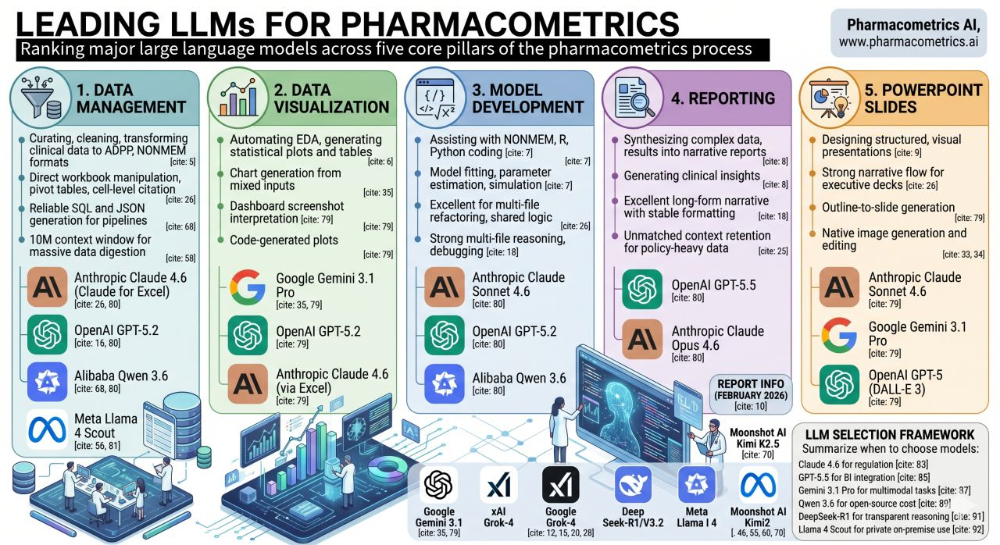

From pharmacometrics knowledge to working code
Elba Raimúndez, PhD
Senior Pharmacometrician
Sanofi
ISoP AI/ML in Pharmacometrics: Hands-on Workshop and Regulatory Panel
34th PAGE Meeting, Dubrovnik, Croatia
June 2, 2026
PMx workflows are code-intensive — NONMEM, R, nlmixr2, mrgsolve, data pipelines — and tasks are repetitive but highly domain-specific.
The barrier is rarely coding ability. It is translating pharmacometric knowledge into correct, reproducible code — at speed.
💡 GenAI flips the bottleneck
Speak pharmacometrics → get working code.
You remain the domain expert; the AI is your code accelerator.
| PMx task | Without GenAI | With GenAI |
|---|---|---|
| Dataset QC | Manual R script (hours) | R script + report (minutes) |
| Plots & Tables | ggplot2 trial and error + manual table formatting | Publication-ready figures & formatted tables |
| Model conversion | Manual translation, high error risk | Auto-conversion + self-reviewed |
| Report | Word document from scratch | Auto-generated Quarto / Word |

Figure: From Pharmacometrics AI
Prompt engineering is the practice of deliberately crafting the text you send to an AI model to reliably obtain accurate, useful, and reproducible outputs.
A prompt is not just a question — it is a specification:
📌 What role should the AI adopt?
📋 What context does it need to answer correctly?
🔢 What exactly do you want it to produce?
📁 Where should outputs land?
| Without prompt engineering | With prompt engineering |
|---|---|
| No context → AI guesses column roles, wrong logic | Context injection → correct EVID semantics, covariate flags from the start |
| “Convert this model” → silent differences | Reflection pattern → conversion + explicit difference list |
| Vague request → generic interpretation | Structured prompt → ✓/✗ report with domain recommendations |
| Broad prompt → incomplete output, many correction rounds | Atomic decomposition → complete output in one pass |
The key insight
The AI’s output quality is bounded by your prompt quality.
Domain expertise lets you write better prompts — and spot bad outputs faster. Prompt engineering is how you stay in control.
| Pattern | PMx example |
|---|---|
| Persona | “Act as Senior PMx, 20y NONMEM + R” |
| Context injection | Pass define-pkdataset.json before QC script |
| Scope anchoring | Open dataset + prior model code in editor first |
| Delimiter | Wrap control stream in [[ ]] when requesting edits |
| Template fill | Standard NONMEM boilerplate → fill $PK, $ERROR |
| Atomic decomposition | 16-step dataset QC checklist |
| Output anchoring | 01-results_qc/, models/*.con |
| Pattern | PMx example |
|---|---|
| Chain prompting | Generate R script → separate prompt for Word report |
| Chain-of-thought | Explain AUC integration steps, then write trapezoidal R code |
| Few-shot | V=10, CL=1 → Ke=0.1 … then ask for your values |
| Reflection | TMDD $DES dimensional consistency + sign errors |
| Explainer/Annotator | Annotate data-cleaning script for regulatory traceability |
| Flip interaction | AI asks YOU questions one-by-one until it has enough info |
| Language translator | NONMEM → nlmixr2, Berkeley Madonna → mrgsolve |
Source: White, Jules, et al. “A Prompt Pattern Catalog to Enhance Prompt Engineering with ChatGPT.” arXiv, 2023, https://arxiv.org/abs/2302.11382.
These patterns are transferable and work with any LLM-based assistant (Claude, ChatGPT, Gemini)
Passing a structured JSON file that describes your dataset is the single most effective context injection for PMx workflows.
Practical effect
Without the define file, the LLM guesses column roles — often correctly for id and time, but wrong for evid, mdv, BQL handling, or which columns are covariates.
With it, the first generated script is usually correct.
# Pharmacometric NONMEM Dataset QC
>>> ROLE:
Act as an expert pharmacometrician
specialised in NONMEM PopPK dataset
quality checks.
>>> INFO:
For column descriptions read the dataset
mapping from .utils/define-pkdataset.json.
>>> TASK: Using R, create and save a script.
1. Count unique individuals (ID)
2. Count doses per subject (EVID == 1)
3. Summarise dosing regimens (AMT, frequency)
...
16. Save all results as CSV in 01-results_qc/🎭 ROLE — primes domain expertise
Precise roles reduce boilerplate and increase specificity. “PopPK dataset QC specialist” outperforms “data analyst”.
📋 INFO — injects context
Agent Mode reads the referenced files. The AI knows your column definitions before writing a single line of code.
🔢 TASK — decomposes the workflow
Each numbered step is atomic and independently testable. You can comment out steps, reorder, or extend without rewriting the prompt.
Separating code generation from result interpretation produces cleaner, more reliable outputs. The second prompt can reference files created by the first.
>>> ROLE: Expert pharmacometrician, NONMEM
dataset QC.
>>> INFO: .utils/define-pkdataset.json
>>> SETUP: Confirm full paths to CSV and
define JSON before coding.
>>> TASK: Create and save `01-data_qc.R` that:
1. Performs 16 sanity/QC checks on the dataset
2. Saves all CSV outputs in 01-results_qc/Output: 01-data_qc.R + CSV tables in 01-results_qc/
# Report results in a Word document
1. Acting as a pharmacometrician, interpret
the QC results in 01-results_qc/.
2. Create a Quarto document with:
- Colour-coded summary table (✓ / ✗)
- Written interpretation + recommendations
- Is this a valid NONMEM dataset?
3. Render to Word format.Output: qc_report.qmd → qc_report.docx
Why split?
A single prompt trying to generate code and interpret results often produces verbose, less accurate output.
Split at natural checkpoints: generate → 👀 human inspection 👀 → report.
| Tutorial | PMx task | Key patterns |
|---|---|---|
| 00 Warm-up | Artificial dataset + BMI scatter plot | Inline Mode · Scope anchoring |
| 01 Data QC | NONMEM dataset sanity + QC checks (16 checks) | Persona · Context · Atomic decomp. · Chain prompting |
| 02 PK Exploration | Demographics + PK sampling scheme + PK profiles + covariate plots | Persona · Context · Atomic decomp. · Chain prompting |
| 03 PD Exploration | PK metric summary stats + ETA/covariate, PK metric/covariate + nephrotoxicity E-R plots | Persona · Context · Atomic decomp. · Chain prompting |
| 04 Model Building (Extra) | ADVAN13 NONMEM control file + nlmixr2 conversion | Persona · Context · Decomp. · Reflection · Language translator |
Always verify the code
AI can generate plausible-looking but incorrect NONMEM syntax or R logic. Read before you run. Test on simulated data first — exactly as in today’s workshop.
Prompts are part of your analysis — version-control them
Save your prompts in the repository alongside the generated code. Reproducibility requires knowing what was asked, not just what was produced.
Expertise amplifies results
The better you understand pharmacometrics, the better your prompts — and the faster you spot errors. GenAI accelerates experts; it does not replace them.
Data privacy
Never paste real patient or proprietary data into public cloud AI tools. Follow your institution’s AI/data-governance policy and check with your IT/Digital team.
Warm-up → Data QC → PK/PD Data Exploration → Model Building
Ctrl+I / Cmd+IWhy GitHub Copilot + VS Code for this workshop?
LLM flexibility: GitHub Copilot can harness multiple backend models (Claude, GPT-4o, o1, Gemini) — you choose the best fit per task. Not locked to a single model.
Coding-first design: Copilot is optimised for code generation and workspace integration — it understands syntax, linting, and context better than general-purpose chatbots.
VS Code over RStudio: VS Code is language-agnostic (R, Python, Julia, Quarto, NONMEM syntax). RStudio excels at R, but PMx workflows mix R, shell scripts, data pipelines, and model files. VS Code + Copilot handles all of them seamlessly in one editor.
Exceptional interactive experience: The agent chat interface is intuitive, responsive, and designed for iterative refinement — you can iterate in multi-turn exchanges without losing context.
>>> ROLE: Expert pharmacometrician,
NONMEM PopPK dataset quality checks.
>>> INFO: .utils/define-pkdataset.json
>>> SETUP: Before coding, ask the user to
provide full paths to the dataset CSV and
define JSON files.
>>> TASK: Create and save `01-data_qc.R` with:
1. Count unique IDs
2. Count doses per subject (EVID == 1)
3. Summarise dosing regimens (AMT, frequency)
4. Count concentration samples per subject
5. Flag duplicate time points
...
16. Save all CSVs to 01-results_qc/01-data_qc.R — full QC workflow script01-results_qc/ covering sanity + data-integrity checksKey patterns at work
Scope anchoring — >>> SETUP block instructs the Agent to ask the user for file paths before coding.
Context injection — Agent reads the define JSON file for column semantics.
Chain prompting — second prompt generates the Word report.
Once the QC CSVs are generated, the tutorial offers two reporting prompts — a deliberate contrast in prompt engineering style.
# Report results in a Word document
Acting as a pharmacometrician expert in popPK,
interpret the QC results in 01-results_qc/.
Create a Quarto document with:
- A description of all key findings
- A colour-coded summary table (✓/✗)
- Recommendations
Render to Word format.🎯 Learning goal: observe what a minimal but realistic prompt produces. Notice variability in structure and completeness between runs.
# Report Results in a Word Document
Acting as a pharmacometrician expert in popPK,
interpret the QC results in 01-results_qc/.
[Full YAML header + flextable spec +
narrative subsections + inline R values
+ colour palette definition provided]🎯 Learning goal: see how a precisely specified prompt produces consistent structure, style, and content — at the cost of more prompt design effort.
The key lesson
Part A vs Part B is not about right vs wrong — it illustrates the prompt quality ↔︎ output quality trade-off.
Both are valid starting points; your domain expertise tells you which gaps to close.
Prompt 1 — PK exploration
>>> ROLE: Expert pharmacometrician, PopPK exploratory analysis.
>>> INFO: .utils/define-pkdataset.json
>>> SETUP: Ask user for dataset CSV and define JSON paths.
>>> TASK: Create `02-pkdata_exploration.R`:
demographics table · PK sampling summary
concentration-time profiles · covariate plots
→ save to 02-results_exploration/Prompt 2 — PD exploration
>>> ROLE: Expert pharmacometrician, PK/PD exploratory analysis.
>>> INFO: .utils/define-pddataset.json
>>> SETUP: Ask user for dataset CSV and define JSON paths.
>>> TASK: Create `03-pddata_exploration.R`:
PK metric summary · ETA vs covariate plots
nephrotoxicity E-R analysis
→ save to 03-results_pd_exploration/02-pkdata_exploration.R — demographics table, PK profiles, covariate plots in 02-results_exploration/03-pddata_exploration.R — PK metric stats, ETA/covariate plots, nephrotoxicity E-R in 03-results_pd_exploration/Key patterns at work
Scope anchoring — >>> SETUP block asks the user for file paths before coding.
Context injection — each mapping file drives variable semantics for its script.
Atomic decomposition — tasks numbered and independently checkable per tutorial.
>>> ROLE: Expert pharmacometrician, NONMEM.
>>> MODEL INFO: .utils/define-advan.json
>>> SETUP: Confirm full paths to dataset CSV
and define JSON files before coding.
>>> TASK: Create a NONMEM control file:
- Build the required ADVAN13 two-compartment IV PopPK model with IIV and combined residual error, then save as *.con in models/.
Once done: review for dimensional consistency
and common sign errors in binding equations.
List any potential pitfalls found.>>> ROLE: Expert PMx, NONMEM + nlmixr2.
>>> MODEL INFO: Read models/*.con
>>> TASK: Convert to nlmixr2 R script:
- Convert the NONMEM model blocks to an equivalent nlmixr2 implementation and save as *.R in models/
- Review and list differences in behaviour.models/*.con — NONMEM-ready ADVAN13 control filemodels/*.R — converted nlmixr2 implementationKey pattern: Self-review
Asking the AI to critique its own output is particularly valuable for unit-sensitive code (e.g., NONMEM differential equations) where a sign error or dimensionality mistake is hard to spot manually — but easy to catch if you know to ask.
Leveraging GenAI Coding Assistants · PAGE 2026